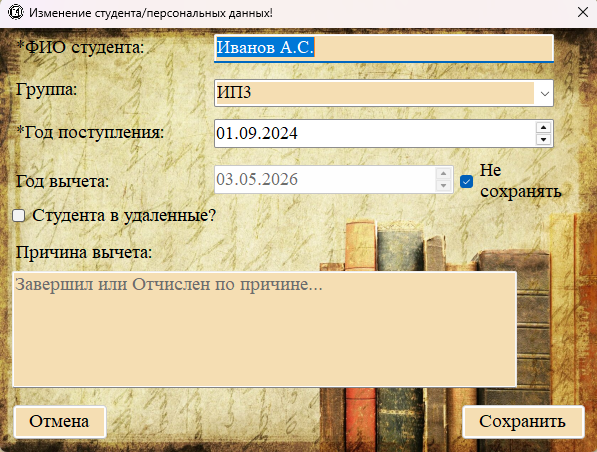

Раздел «Удалённые персональные файлы» (меню «Студенты → Удаленные перс. файлы») содержит личные дела студентов, срок хранения которых истёк и которые подлежат уничтожению в установленном порядке.
Важная особенность: документы, подлежащие уничтожению, не удаляются безвозвратно из базы данных. Они перемещаются в специальный раздел «удалённых» записей, где хранятся отдельно и также доступны для поиска и просмотра. Это требование технического задания.

Рис. 1. Раздел «Удалённые персональные файлы»
Отображаемые поля
Таблица удалённых персональных файлов имеет такие же колонки, как и раздел обычных персональных файлов:
— Год отчисления;
— Причина отчисления;
— Год поступления;
— Студент (ФИО).
Как попадают записи в этот раздел

Рис. 2. При редактировании студента можно переместить его личное дело в удалённые
Запись попадает в раздел «Удалённые персональные файлы» в следующих случаях:
1. При добавлении нового студента установлен чекбокс «Студента в удаленные?».
2. При редактировании существующего студента установлен чекбокс «Студента в удаленные?» и сохранены изменения.
Поиск среди удалённых персональных файлов
Для поиска удалённых личных дел доступны те же механизмы, что и для обычных:
— Полнотекстовый поиск через строку поиска (поиск по ФИО, причине отчисления).
— Фильтрация по значениям столбцов (например, отфильтровать все личные дела с отчислением в 2020 году).
Редактирование и удаление
В разделе удалённых персональных файлов доступны:
— Редактирование (можно изменить данные личного дела, а также «вернуть» студента обратно, сняв чекбокс).
— Удаление (полное безвозвратное удаление из базы данных — требуется отдельное подтверждение).
Физическое уничтожение документов

Когда наступает срок физического уничтожения документов, сотрудник архива может:
1. Найти все записи, срок хранения которых истёк (с помощью поиска и фильтрации).
2. Распечатать список для акта уничтожения.
3. После утверждения акта — удалить записи из раздела «Удалённые» (при необходимости оставить в базе для истории).